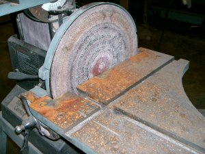
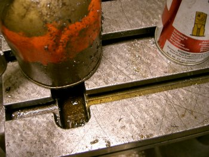

Safety is extremely important in the shop. Be sure you have read and signed a copy of the Caltech Student Shop Member Rules [PDF].
Incident Log
Date: January 8 2005 I was in the shop on Saturday when I discovered considerable damage to the disk sander. The steel table was severely rusted and the sanding disc was gummed up. It seems that someone tried to sand something very wet, even soaking wet with the sander, not realizing that this is detrimental to the equipment. Not only has it destroyed the sanding disk, but it also rusted the table and probably caused quite a bit of corrosion inside the machine. Again, we do not want people like this using the equipment as they are irresponsible and careless. Please report this sort of damage as soon as it is discovered to help improve the shop for others. When this stuff happens, it costs money to fix, and it means there is less money to maintain other equipment and purchase new supplies.
Date: November (11-13) 2005
Someone left the mill a complete mess after having used it improperly to cut a (¼” X 4”) piece of steel. The person appears to have wanted to cut the end off of a piece of steel, and instead of using the proper tool (the horizontal band saw) they chose to use the Bridgeport Mill. They clamped the piece of steel in the vice and chose an end mill of about ½” diameter. They proceeded to cut the piece at the spindle speed that was more adequate for fly cutting aluminum (the bit was spinning way too fast). It seems as though the person noticed that everything was getting way too hot, so they poured oil on the metal, so much oil that it spilled onto the floor and caused a huge puddle. They probably used close to a half quart of oil trying to cool the thing down. The end mill was spinning so fast that it flung oil and metal shaving all along the wall near the mill. When the cut came close to traversing the metal, it TORE through the other side leaving a very ugly cut. The person who is responsible for this did not bother to clean all the mess s/he made and left it to burden all other members. These are not the type of members we want to be using the student shop.
